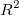
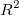

Der Dialog Lineare Anpassung kann verwendet werden, um das einfache lineare Modell an Ihre Daten anzupassen:
Origins Dialog Lineare Anpassung kann von einem aktiven Arbeitsblatt oder Diagramm aus geöffnet werden. Im Menü:
| Fehler als Gewichtung |
Verwenden der Fehlerbalken als Wert für Gewichtungen Diese Option ist nur verfügbar, wenn eine zugewiesene Fehlerspalte ausgewählt ist.
-
- Es werden keine Daten als Gewichtung verwendet.
-
 = Werte aus der i-ten Zeile der Spalte Fehler und = Werte aus der i-ten Zeile der Spalte Fehler und^2")
-
 - wobei
 = Werte aus der i-ten Zeile der Spalte Fehler und = Werte aus der i-ten Zeile der Spalte Fehler und
^2")
Weitere Informationen finden Sie unter Gewichtete Anpassung.
|
| Fester Schnittpunkt mit der Y-Achse |
Beschränkt den Schnittpunkt mit der Y-Achse auf den festgelegten Wert.
|
| Fester Schnittpunkt mit der Y-Achse bei |
Legt den Schnittpunkt mit der Y-Achse fest.
|
| Feste Steigung |
Beschränkt die Steigung auf den festgelegten Wert.
|
| Feste Steigung bei |
Legt die Steigung fest.
|
| Skalierungsfehler mit Quadrat (Reduziertes Chi-Quadrat) |
Diese Option ist verfügbar, wenn Anpassung mit Gewichtung ausgewählt ist. Dieses Kontrollkästchen beeinflusst nur den Fehler auf die Parameter, die der Anpassungsprozess meldet und nicht den Anpassungsprozess selbst oder die Daten in irgendeiner Weise. Standardmäßig ist diese Option aktiviert. Die Kovarianzmatrix wird berechnet mit: , ansonsten .
Wenn diese Option aktiviert ist, verwendet sie das reduzierte Chi-Quadrat, um die Fehlervarianz zu schätzen. Der Standardfehler des Parameters wird durch sie skaliert. Ansonsten wird die Fehlervarianz mit 1 festgelegt und der Standardfehler des Parameters wird nicht skaliert.
 |
Diese Option wird standardmäßig aktiviert, um den Standardfehler des Parameters und verwandte Ergebnisse kompatibel mit anderer Software zu halten. Es wird empfohlen, diese Option zu deaktivieren, wenn Daten mit instrumenteller Gewichtung angepasst werden, so dass der Standardfehler des Parameters den Betrag der Gewichtung wiedergeben kann.
|
|
| Scheinbarer Fit |
Verwenden Sie die scheinbaren Werte zum Anpassen entsprechend der aktuellen Achsenskalierungen. Aktivieren Sie zum Beispiel dieses Kontrollkästchen, um die exponentiellen Zerfallsdaten mit einer geraden Linie anzupassen, wenn die Daten auf einer Log-Skala gezeichnet werden. Wenn dieses Kontrollkästchen aktiviert ist und die Daten mit ihnen verbundene Fehlerwerte haben, verwendet Origin die größeren der positiven/negativen Fehler als Gewichtung.
|
| Ungültige Behandlung der gewichteten Daten |
- Wenn es in den gewichteten Daten ungültige Werte gibt, meldet Origin einen Fehler.
- Mit benutzerdefiniertem Wert ersetzen
- Ungültige Gewichtungsdaten mit benutzerdefiniertem Wert ersetzen
|
| Benutzerdefinierte Gewichtung |
Legen Sie den Wert der benutzerdefinierten Gewichtung fest. Diese Option ist verfügbar, wenn Mit benutzerdefiniertem Wert ersetzen aktiviert ist.
|
| Fit-Parameter |
Wert
- Wert des Parameters
Standardfehler
- Standardfehler von Parametern
LCL
- Die untere Konfidenzgrenze
OEG
- Die obere Konfidenzgrenze
Konfidenzniveau für Parameter (%)
- Das Konfidenzniveau für die Regression
t-Wert
- Wert des t-Tests von Parametern
Wahrsch.>|t|
- p-Wert der Parameter
KI halbe Breite
- Halbe Breite des Konfidenzintervalls
Weitere Informationen finden Sie unter Parameter.
|
| Statistik zum Fit |
Anzahl der Punkte
- Die gesamte Anzahl der angepassten Punkte
Freiheitsgrade
- Freiheitsgrade des Modells
Reduziertes Chi-Quadrat
- Der Wert des reduzierten Chi-Quadrats (gleich der Summe der Fehlerquadrate geteilt durch den Freiheitsgrad)
R-Wert
- Der
 -Wert (gleich der Quadratwurzel von ) -Wert (gleich der Quadratwurzel von )
Summe der Fehlerquadrate
- Summe der Fehlerquadrate (RSS) oder Fehler der Summe der Quadrate
Pearson r
- Pearsons Korrelationskoeffizient
R-Quadrat (COD)
- Determinationskoeffizient
Kor. R-Quadrat
- Korrigierter Determinationskoeffizient
Wurzel-MSE (StAbw)
- Residuale Standardabweichung oder Quadratwurzel des mittleren quadratischen Fehlers
Betrag der Residuen
- Betrag der Residuen; gleich der Quadratwurzel von RSS
Weitere Informationen finden Sie unter Statistik.
|
| Zusammenfassung des Fits |
Die Tabelle der Fit-Zusammenfassung wird ausgegeben. Diese Tabelle organisiert Fit-Parameter nach Zeile für jede Kurve (abhängige Daten).
|
| ANOVA |
Die Tabelle der Varianzanalyse wird ausgegeben.
Weitere Informationen finden Sie unter ANOVA-Tabelle.
|
| Test auf fehlende Anpassung |
Die Ergebnisse des Tests auf fehlende Anpassung werden für die Anpassung replizierter Daten ausgegeben und dazu verwendet, die Adäquatheit des festgelegten Modells zu beurteilen.
Weitere Informationen finden Sie unter Tabelle des Tests auf fehlende Anpassung.
|
| Kovarianzmatrix |
Die Kovarianzmatrix wird ausgegeben.
Weitere Informationen finden Sie unter: Kovarianz- und Korrelationsmatrix
|
| Korrelationsmatrix |
Die Korrelationsmatrix wird ausgegeben.
Weitere Informationen finden Sie unter: Kovarianz- und Korrelationsmatrix
|
| Ausreißer |
Die Liste der Ausreißer wird ausgegeben.
|
| Schnittpunkt mit der X-Achse |
Schnittpunkt der angepassten Kurve mit der Linie Y = 0
|
Wählen Sie Methoden zur Berechnung und Ausgabe von verschiedenen Residuen aus. Weitere Einzelheiten finden Sie unter: Grafische Residuenanalyse.
| Diagramm |
Ergebnistabelle
-
Legen Sie fest, ob die Anpassungsergebnisse in die Diagramme der Quelle/des Berichts eingefügt werden oder nicht.
-
- Es wird keine Anpassungsergebnistabelle zum Diagramm hinzugefügt.
- Es wird keine Anpassungsergebnistabelle zum Quelldiagramm hinzugefügt. Ist nur sinnvoll, wenn die Eingabedaten aus dem Diagramm stammen.
- Es eine Anpassungsergebnistabelle zu den eingebetteten Diagrammen im Berichtsblatt hinzugefügt. Wenn sich mehr als ein Diagramm im Berichtsblatt befindet, wird die Tabelle zur ersten hinzugefügt.
- Quell- und Berichtsdiagramme
- Es wird eine Anpassungsergebnistabelle zum Quelldiagramm und zum Berichtsdiagramm hinzugefügt.
-
Tabellenstilvorlage
- Legen Sie die Vorlage für den Tabellenstil fest, der im Ergebnisdiagramm verwendet wird.
-
Eigenschaften in Tabelle
- Legen Sie die in der Tabelle anzuzeigenden Eigenschaften fest.
-
Benutzerdefinierte Anzeige für Fehlerwerttabelle
- Legen Sie die Dezimalstellen für den Fehlerwert in der Ergebnistabelle im Diagramm fest.
Diagramme in Spalten anordnen
- Legt die Anzahl l fest. In einer Ergebnistabelle werden Diagramme in Zeilen von l Diagrammen angeordnet.
Diagramme des gleichen Typs in einem Graph anordnen
- Wenn dieses Kontrollkästchen aktiviert ist, werden Diagramme des gleichen Typs in einer Grafik angeordnet.
Residuendiagramme in einem Diagramm anordnen
- Wenn dieses Kontrollkästchen aktiviert ist, werden alle Residuendiagramme in einer Grafik angeordnet.
|
| Blattanordnung der Fit-Ergebnisse |
Diese Auswahlliste ist nur verfügbar, wenn mehrere Datensätze eingegeben wurden. Legt fest, wie die Arbeitsblätter der angepassten Ergebnisse angeordnet werden.
-
-
Kombiniert
- Alle Ergebnisse werden kombiniert in einem Arbeitsblatt ausgegeben.
-
Getrennt
- Die Ergebnisse werden in getrennten Arbeitsblättern ausgegeben.
|
| Datensatzidentifizierer |
Bestimmt, wie die Quelldaten in Ihrer Ausgabe beschriftet werden.
-
Identifizierer
-
Verwendet Folgendes, um die Quelldaten zu identifizieren. Beachten Sie, dass es beim Durchführen einer linearen Anpassung auf gezeichnete Daten (d.h., ein Diagrammfenster ist aktiv) eine zusätzliche Option Zeichnungslegende gibt.
-
- Geben Sie die Quelldaten mit Hilfe der Bereichssyntax an.
- Verwendet den Langnamen der Arbeitsmappe, wenn er existiert (auch wenn er nicht gezeigt wird), ansonsten den Mappenkurznamen.
- Verwendet den Kurznamen des Arbeitsblatts.
- Verwendet den angezeigten Blattnamen.
- Verwendet den Spaltenlangnamen, wenn er existiert, ansonsten den Spaltenkurznamen.
- Verwendet den Kurznamen der Spalte.
- Verwendet den Langnamen der Spalte.
- Verwendet die Einheiten der Spalte.
- Verwendet die Kommentare der Spalte.
- Verfügbar, wenn das aktive Fenster ein Diagrammfenster ist. Verwendet die Legendenbeschriftung für die anzupassende Zeichnung.
-
Verwendet benutzerdefinierte Notation, um die Quelldaten zu identifizieren. Diese Option fügt ein Feld Benutzerdefinierter Identifizierer hinzu, in das Sie Ihren Identifizierer eingeben können. Hilfe zur Notation des Identifizierers finden Sie unter diesen Themen:
-
Zuordnung
- Legen Sie die Verwendung des X-Datensatzes, des Y-Datensatzes etc. fest, um den Identifizierer bereit zu stellen. Das Wählen von <Auto> verwendet die abhängige Variable (typischerweise die Y-Spalte). Dieses Bedienelement ist nicht für alle Identifizierer verfügbar.
-
Identifizierer im Ergebnisblatt
- Viele Origin-Analyseoperationen geben Daten zusätzlich zu den minimierbaren Analyseberichtsblättern in einem Ergebnisblatt aus. Der Identifizierer wird in dem Ergebnisblatt verwendet.
|
| Berichtstabellen |
Legt das Ziel der Berichtstabellen fest.
-
Mappe
-
Legen Sie die Zielarbeitsmappe fest.
-
- Berichtsblatttabellen werden nicht ausgegeben.
-
- Die Arbeitsmappe wird automatisch von dem Programm ausgewählt.
-
- Die Arbeitsmappe mit den Quelldaten
-
- Eine neue Arbeitsmappe
-
- Eine festgelegte bestehende Arbeitsmappe
-
Mappenname
-
- Der Name der Zielarbeitsmappe
-
Blatt
- Das Zielarbeitsblatt, immer <neu>
-
Blattname
-
- Der gewünschte Name des Zielarbeitsblatts
-
Ergebnisfenster
- Mit diesem Kontrollkästchen wird festgelegt, ob der Bericht im Ergebnisfenster ausgegeben werden soll oder nicht.
-
Skriptfenster
- Legt fest, ob der Bericht im Skriptfenster ausgegeben wird.
-
Notizfenster
-
Legen Sie das Ziel des Notizfensters fest:
-
- Nicht in Notizfenstern ausgeben
-
- In ein neues Notizfenster ausgeben Sie können den gewünschten Namen des Notizfensters hier eingeben.
|
| Angepasste Kurven |
Legen Sie die Zielarbeitsmappen und das Arbeitsblatt für die angepassten Werte fest.
-
Mappe
-
Legen Sie die Zielarbeitsmappe fest.
-
- Die Arbeitsmappe wird automatisch von dem Programm ausgewählt.
-
- Die Arbeitsmappe mit den Quelldaten
-
- Die Arbeitsmappe mit den Berichtstabellen
-
- Eine neue Arbeitsmappe
-
- Eine festgelegte bestehende Arbeitsmappe
-
Mappenname
- Der Name der Zielarbeitsmappe
-
Blatt
-
Legen Sie das Zielarbeitsblatt fest.
-
- Quelldatenarbeitsblatt
-
- Ein neues Arbeitsblatt
-
- Ein festgelegtes bestehendes Arbeitsblatt
-
Blattname
- Der Name des Zielarbeitsblatts
|
| Anpassungsresiduen |
-
Mappe
-
Legen Sie die Zielarbeitsmappe fest.
-
- Die angepassten Werte befinden sich in der Arbeitsmappe.
-
- Die Arbeitsmappe mit den Quelldaten
-
- Eine neue Arbeitsmappe
-
- Eine festgelegte bestehende Arbeitsmappe
-
Mappenname
-
- Der Name der Zielarbeitsmappe
-
Blatt
-
Legen Sie das Zielarbeitsblatt fest.
-
- Das Arbeitsblatt, das die angepassten Werte enthält
-
- Ein neues Arbeitsblatt
-
- Ein festgelegtes bestehendes Arbeitsblatt
-
Blattname
-
- Der Name des Zielarbeitsblatts
|
| Suche nach spezifischen X/Y-Tabellen |
Legt das Ziel der Tabellen für Suche nach spezifischen X/Y fest. Dieser Zweig ist nur verfügbar, wenn entweder das Kontrollkästchen X von Y finden oder das Kontrollkästchen Y von X finden aktiviert ist.
- Siehe unten: Suche spezifisches X/Y.
-
Mappe
-
Legen Sie die Zielarbeitsmappe fest.
-
- Die angepassten Werte befinden sich in der Arbeitsmappe.
-
- Die Arbeitsmappe mit den Quelldaten
-
- Eine neue Arbeitsmappe
-
- Eine festgelegte bestehende Arbeitsmappe
-
Mappenname
-
- Der Name der Zielarbeitsmappe
-
Blatt
-
Legen Sie das Zielarbeitsblatt fest.
-
- Das Arbeitsblatt, das die angepassten Werte enthält
-
- Ein neues Arbeitsblatt
-
- Ein festgelegtes bestehendes Arbeitsblatt
-
Blattname für X suchen
-
- Der Name des Zielarbeitsblatts für X suchen
-
Blattname für Y suchen
-
- Der Name des Zielarbeitsblatts für Y suchen
|
| Optionale Berichtstabellen |
Legen Sie fest, was in dem Berichtsblatt ausgegeben werden soll.
-
Gleichung in Notizen
-
Legen Sie das Format der Gleichung in der Berichtstabelle fest.
-
- Die Gleichung wird mit Parameternamen ausgegeben.
-
- Die Gleichung wird mit den angepassten Werten der Parameter ausgegeben.
-
Notizen
- Tabelle der Notizen
-
Eingabedaten
- Tabelle für Eingabedaten
-
Maskierte Daten
- Tabelle für maskierte Daten
-
Fehlende Daten
- Tabelle für fehlende Daten
|
| In Berichtstabelle zeichnen |
Wenn das Kontrollkästchen aktiviert ist, werden die angepassten Kurven zur Berichtstabelle hinzugefügt.
|
| In Originaldiagramm zeichnen |
Diese Option ist nur verfügbar, wenn die Eingabedatensätze aus dem Diagramm stammen. Sie kann verwendet werden, um festzulegen, ob die angepasste Kurve zum ursprünglichen Diagramm hinzugefügt wird oder nicht.
-
- Die angepasste Kurve wird nicht zum ursprünglichen Diagramm hinzugefügt.
-
- Die angepasste Kurve wird zum ursprünglichen Diagramm hinzugefügt.
- Angepasste Kurve+Diagrammtyp
-
- Die angepasste Kurve und das in der Auswahlliste Diagrammtyp festgelegte Diagramm werden zum ursprünglichen Diagramm hinzugefügt.
- Diese Option ist nur verfügbar, wenn die Eingabedatensätze aus einem Diagramm stammen und der Modus Zusammengefasster Fit gewählt ist.
|
| Stapel mit Residuen- vs. Unabhängige Diagramme |
Die angepasste Kurve mit den Residuen- vs. unabhängigen Diagrammen wird gestapelt. |
| Legende im Originaldiagramm aktualisieren |
Legt fest, ob die Legende im Quelldiagramm aktualisiert wird.
|
| Mehrere Diagramme verwenden Quell-Diagrammfarbe |
Legt fest, ob die Farbeinstellungen des Quelldiagramms zum Einfärben von mehreren angepassten Kurven verwendet werden sollen.
|
| X-Datentyp |
Legt fest, wie die X-Werte der angepassten Kurve erzeugt werden.
-
- Die X-Werte der angepassten Kurve werden in einer äquidistant verteilten linearen Skala gezeichnet.
-
- Die X-Werte der angepassten Kurve werden in einer logarithmischen Skala gezeichnet.
- Das Gleiche wie die Eingabedaten
-
- Die X-Werte der angepassten Kurve sind die gleichen wie die X-Eingabewerte.
- Skalierungstyp des Quelldiagramms verwenden
-
- Die X-Werte der angepassten Kurve werden entsprechend des Skalierungstyps des Quelldiagramms gezeichnet.
- Diese Option ist nur verfügbar, wenn die Eingabedatensätze aus dem Diagramm stammen.
-
Punkte
- Dieses Bedienelement ist nur verfügbar, wenn für X-Datentyp entweder Einheitlich Linear oder Log gewählt wurde. Es legt die Gesamtanzahl der Datenpunkte in einer angepassten Kurve fest.
-
Bereich
-
Dieses Bedienelement ist nur verfügbar, wenn für X-Datentyp entweder Einheitlich Linear oder Log gewählt wurde. Es legt den Bereich der X-Werte der angepassten Kurve fest. Wählen Sie eine der folgenden Optionen aus:
- Eingabedatenbereich + Grenze verwenden
- Eingabedatenbereich + Schnittpunkt mit X-Achse + Grenze verwenden
- Ausweiten auf gesamten Achsenbereich
- Benutzerdefiniert
-
Bereichsrand (%)
- Diese Einstellung ist nur verfügbar, wenn der X-Datentyp entweder Einheitlich Linear oder Log ist und Eingabedatenbereich + Bereichsgrenze verwenden für Bereich gewählt wurde. Es legt den Bereichsrand fest, in dem die angepassten Kurven liegen.
-
Min/Max
- Dieses Bedienelement ist nur verfügbar, wenn der X-Datentyp entweder Einheitlich Linear oder Log ist und Benutzerdefiniert für Bereich gewählt wurde. Diese zwei Textfelder legen das Minimum und Maximum des X-Werts für angepasste Kurven fest.
|
| Konfidenzbänder |
Wenn dieses Kontrollkästchen aktiviert ist, werden Konfidenzbänder zu dem angepassten Kurvendiagramm als zwei Linien mit einer zwischen ihnen gefüllten Fläche hinzugefügt. Sie können auf der Registerkarte Linie des Dialogs Details Zeichnung die Flächenfüllung ausschalten oder das Füllmuster benutzerdefiniert anpassen.
Weitere Informationen finden Sie unter: Konfidenz- und Prognosebänder.
|
| Prognosebänder |
Wenn dieses Kontrollkästchen aktiviert ist, werden Prognosebänder zu dem angepassten Kurvendiagramm als zwei Linien mit einer zwischen ihnen gefüllten Fläche hinzugefügt. Sie können auf der Registerkarte Linie des Dialogs Details Zeichnung die Flächenfüllung ausschalten oder das Füllmuster benutzerdefiniert anpassen.
Weitere Informationen finden Sie unter: Konfidenz- und Prognosebänder.
|
| Konfidenzniveau für Kurven(%) |
Legen Sie das Konfidenzniveau für die Konfidenz- und Prognosebänder fest.
|
| Ellipse |
Aktivieren Sie dieses Kontrollkästchen, um die Konfidenzellipse zum angepassten Kurvendiagramm hinzuzufügen, das auf dem gewählten Konfidenzniveau basiert.
-
Datenpunkte
- Legen Sie die Anzahl der Datenpunkte der Ellipse fest.
-
Mittelwert
-
Aktivieren Sie dieses Kontrollkästchen, um die Konfidenzellipse zum Mittelwert der Grundgesamtheit hinzuzufügen.
-
Konfidenzniveau(s) in %
- Legt das Konfidenzniveau für die Konfidenzellipse fest.
-
Prognose
-
Aktivieren Sie dieses Kontrollkästchen, um die Konfidenzellipse zur Prognose hinzuzufügen.
-
Konfidenzniveau(s) in %
- Legt das Konfidenzniveau für die Konfidenzellipse fest.
Weitere Informationen finden Sie unter Konfidenzellipsen.
|
Verwenden Sie die Bedienelemente in diesem Zweig, um die Residuendiagramme benutzerdefiniert anzupassen. Weitere Einzelheiten finden Sie unter: Grafische Residuenanalyse.
 rechts von Bereich 1 und dann im Kontextmenü auf Zeilenbereich auf alle anwenden.
rechts von Bereich 1 und dann im Kontextmenü auf Zeilenbereich auf alle anwenden.